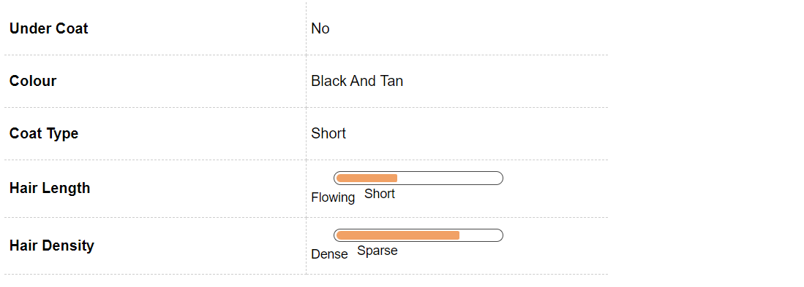

Doberman Dog Breed Information
Introduction
An athletic body, sharp ears and high agility, a Doberman Pinscher or Dobermann as it is commonly known is a relatively new breed on the block. Historically known as the dog breed for the tax collectors, Doberman Pinschers have earned the reputation of being the most dangerous dogs in the canine world.
With that tough a reputation, many people refuse to enter houses when they know that there is a Dobermann in the premise. A Doberman’s reputation is known to precede it. Dobermann Pinschers have been bred to be not only excellent working dogs but also wonderful pets.
Dobermanns are respected the world over for their strength, ferociousness, intelligence, fearlessness and undying loyalty to their family. It for these very reasons, that the Dobermann make superior watch and guard dogs, surpassing the capabilities of German Shepherds and Rottweilers. Doberman are formidable guardians and with the people their family, Doberman Pinschers are gentle, watchful and a loving companion.
Some of the famous celebrities such as Priscilla Presley, Racquel Welsch, former President John F Kennedy, Forest Whitaker, and Mariah Carey are the proud owners of a Doberman Pinscher. If you are a proud owner of this majestic breed or if you are planning to get a Doberman Pinscher as a family pet, you are making an exciting decision.
We bring to you all the aspects that you will have to keep in mind before getting a Doberman Pinscher so that you are able to provide an environment that develops a healthy dog and a long lasting companionship.
History
Though the time lines are uncertain, it is said that Doberman were bred not less than 150 years ago in Germany around the year 1890 by Herr Karl F Louis Doberman. Louis was a tax collector and would have to travel to places that were dangerous as there were chances of being attacked by thieves or bandits.
He wanted a dog that was strong, athletic and fiercely loyal. He carried out experiments and bred Doberman Pinschers. Canine behaviorists speculate that a Doberman is a result of the experiments made with Rottweilers, German Pinschers, Manchester Terrier, Great Dane, Wiemaraner, German Shorthaired Pointer, Old German Shepherd Dog and the Greyhound.
The breed was named after Herr Dobermann in order to honor his contribution to developing this breed. Post Dobermann’s death, German breeders continued to breed the “superior dog” which were known for their intelligence, bravery and strength.
Over a period of time, the dogs came to be known for being head strong and aggressive or ferocious in nature. It was in 1900 that the German Kennel Club recognised Doberman as a breed. During the World War 1 Dobermann gained importance especially with the police and military and also amongst very rich people who wanted to protect their houses from bandits.
Unique Aspects
When one thinks of a Doberman Pinscher, the most distinguishing feature is the powerful and muscular body. Their athletic body is built for speed and endurance giving giving them a ferocious yet elegant appearance.
Another unique feature is the powerful wedge shaped head that gives it a strong profile. The other unique feature is the strongly developed wide scissors teeth bite that attributes to the dog’s ferocious look.
For years the ears of a Doberman have been cropped to give it a majestic look. As a breed standard, the tails of a Doberman are docked at the stump.
Fun Trivia

Dobermann because of their intelligence and trainability have caught the fancy of various movie directors. They have been portrayed in various movies and have been favorites of many celebrities around the world as well.
Movie Character
Dobermann Pinscher has been portrayed in various movies as animals trained to perform various heists. This includes a formidable list such as Eyes of an Angel. Doberman Gang, The Daring Dobermans and The Amazing Doberman along with the Beverly Hills Chihuahuas.
Celebrity Doberman owners
In addition to this they have been the First Dogs of the United States under the reign of John F. Kennedy, yesteryears designer Rudolph Valentino. In addition to that coveted owners there was Beatrice Arthur an actress, Hunter S. Simpson yesteryears writer. Closer home Dobermann is an ally to Preeti Shenoy, a writer and activist.
Vital Stats:
Other names:
Doberman Pinscher, Dobermann, Doberman
Height:
24-28 Inches
Weight:
30-40 kg
Life Span:
13 to 14 years
Pros and Cons
| Pros |
Cons |
|
Exceptional guard dogs for family
|
Not for first time owners, need experience handling
|
|
Minimal shedders and coat does not require much maintenance |
Does not withstand extreme cold weather |
|
Easy to train and have amazing grasping power |
Requires extreme and vigorous exercise not for less active families
|
Doberman Maintenance & Effort
Grooming
Doberman are one of the most easiest breeds to groom. Blessed with sleek, short coat, Dobermann come in black, rust, blue, fawn or a combination of the colours with prominent rust markings.The coat of a Doberman Pinscher is short and does not shed much, so they require very little grooming.
However, pet parents to Doberman Pinchers will have to keep in mind that due to the short fur, the skin of the Doberman is extremely sensitive to extreme cold or heat. Therefore, if you are in a place where there are extreme weather conditions, please ensure that appropriate care is taken to maintain the temperature for the dog.
Dental grooming is also a must for the Dobermann. Regular brushing will ensure that there is no tartar or plaque buildup and the mouth of the Dobermann remains clean and there are no chances of the onset of any periodontal problems. To avoid any injury to the feet especially during running or playing, it will be advised that the nails of the dog are regularly trimmed and kept short.
Cleaning of ears using a ear wipes will also help avoid any ear infections or wax buildup. While grooming, check for any rashes or redness in the skin, especially between the paws and the ears.
A good grooming regime begins from an early age. Introducing your dog to dental, grooming and bathing regimes will ensure that the puppy gets accustomed to the routine and is comfortable with it.
Doberman Hair & Coat

Doberman Health & Care
Common Health Issues
Dobermans are generally a healthy breed of dog. However, due to the inter breeding, there are a number of problems that the Dobermans may have inherited. Some of the common health issues that Dobermans might be prone are:
Von Willebrand’s Disease-
Von Willebrand’s Disease - It is an inherited blood disorder that interferes with the blood’s ability to clot. As a result of this, the dog may bleed excessively after an injury or a surgery. if the dog has Von Willebrand’s disease, it will be susceptible to nosebleeds and bleeding gums.
There is no cure for this disease. Dogs with this disease should not be bred.
Hip Dysplasia -
Hip Dysplasia - Hip Dysplasia is a genetic disorder where the hip bone has a defect in connecting with the hip joint as a result of which the dog may experience pain or lameness in either of the rear legs. As the dog grows, he / she may also develop arthritis.
Before getting a puppy, check the medical documents of the parents to rule out hip dysplasia.
Hypothyroidism -
Hypothyroidism is another condition that inflicts Doberman. In hypothyroidism, the hormone gland of the dog does not function well and as a result, the growth and the development of the dog gets affected.
Common symptoms of hypothyroidism include dull fur, extreme lethargy, obesity / weight loss and mental dullness. A full blood check up will be required to diagnose the problem.
Gastric Dilatation Volvulus or Bloat -
Gastric Dilatation Volvulus or Bloat - This is a common problem in deep chested dogs. Bloat can be lethal in nature if not detected early as it causes organ, especially gastric failure.
In case of Bloat, there is a sudden buildup of gas in the digestive system and then causes the organ to twist.
Progressive retinal atrophy -
Progressive retinal atrophy - PRA or progressive retinal atrophy is a degenerative disease of the retinal cells that can cause blindness in the dog.
Wobbler’s Syndrome -
Wobbler’s Syndrome - It is an inherited syndrome where the spinal canal is malformed causing cervical vertebral instability.
Cardiomyopathy -
Cardiomyopathy - Cardiomyopathy is a disease where the heart muscle becomes thin and weak and leads to the expansion and widening of the heart chambers resulting in an abnormally large heart.
Albinoism -
Albinoism - it is a genetic disorder which causes pink skin and nose in a dog. An albino dog may have light or blue eyes making them highly susceptible to sunlight and other health conditions.
Narcolepsy -
Narcolepsy - it is a neurological condition that results in the brain’s inability to regulate wake sleep patterns. A dog with this syndrome may suddenly become sleepy and fall asleep.
Doberman Behavior
Temperament
Doberman Pinschers are one of the most intelligent and active dog breeds in the world. They are high on stamina and strength and love to stay with their family.
Pet parents to a Doberman Pinscher will have to understand that their Doberman does not like to be left alone for long hours and that he / she will require a schedule that keeps them engaged mentally and physically. Like Boxers, Doberman Pinschers take a little time to mature and gain full maturity by the age of 3 - 4 years.
Doberman Pinschers are one of the most versatile dogs in the canine world. Extremely loyal, intelligent, adaptable, skilled and blessed with a strong protective instinct, Doberman Pinschers make outstanding watch dogs and guard dogs. Their high intelligence makes them a preferred dog for the armed forces, police work and also for search and rescue teams.
Doberman Pinschers are not really the dogs for first time dog owners as they require a family or owner that displays a natural leadership and authority over the dog. Doberman Pinschers require firm yet gentle hand as they do not appreciate aggressive handling.
Like all dogs, Doberman Pinschers must be socialised with people, children and other pets in the house so that when they grow up the Doberman is gentle and does not show signs of aggressiveness.
Environment
Doberman Pinschers do great in apartment and big houses as long as they get a 1 - 2 hours of a mentally and physically stimulating exercise regime. Vigorous exercise will keep the dog healthy and expend their excessive energy.
In apartments, due to their big size, Doberman Pinschers may knock off things in their way. Due to their short fur, Doberman Pinschers are extremely vulnerable to winters and require extra care during the cold weather. be forever running after your pet Beagle to stop its explorations.
Training & Intelligence
Doberman Pinschers have been known as the 5th smartest dogs in the canine world. Their high intelligence makes them extremely easy dogs to train.
It is due to their high intelligence levels and fierce loyalty that armed forces, police force, search & rescue teams and even guard teams prefer Doberman Pinschers over any other dog breed. When trained and socialised early on, Doberman Pinschers make wonderful family companions.
First time owners of a Doberman may want to seek professional help from Canine behaviorists or Dog Trainers to ensure that a comprehensive training regime is designed for Doberman that keeps them engaged and also meets the characteristics of a working dog breed. Doberman respond extremely well to positive reinforcements and activities that allow it to think independently.
For years Doberman have been trained for agility, obedience and other trainings that suit a working dog breed. As parents to a Doberman, be ready to spend a lot of time training and playing with your Doberman.
All forms of training for your Doberman puppy should start at an early age. It will be imperative for new pet parents to start house training as soon as the puppy arrives so that there are fewer incidents inside the house.
Doberman Breeding
Procreation
Doberman Pinschers are a healthy and sturdy breed and become mature by the age of 3 - 4 years. If you are going to mate and breed your Doberman, make sure that you understand thoroughly the medical histories of his / her mating partner and also the medical history of the Doberman’s parents so make sure that they are not suffering from any serious genetic disorder that may be deterrent to the overall growth of the new puppies.
If you are a first time pet parent, seek medical advice to ensure that the mating and breeding process is comfortable for both the dogs.
Puppies
An average litter size of a Doberman Pinscher varies between 6 - 9 puppies with an average life expectancy of upto 13 years. When the puppies are born, it will be imperative to vaccinate them and to train them from early own as they are extremely active and if not monitored may destroy furniture and other things that might catch their attention.
Doberman Appearance
Body
Doberman Pinschers are one of the most elegant and good looking breeds in the world. Built for speed and endurance, a Doberman pinscher has a strong and powerful muscular body with a deep broad chest. A fully grown Doberman Pinscher male will stand anywhere between 26 - 28 inches while a female Doberman pinscher will be between 24 - 26 inches and weigh anywhere between 30 - 40 kgs.
The head of a Doberman Pinscher is like a blunt wedge giving the dog an authoritative look. The top of the head is flat and the muzzle has a slight stop. Most Dobermans have beautiful dark almond shaped eyes which may be in black or dark brown in colour.
The ears of a Doberman are usually cropped to stand erect, though many breeders are now opting for a floppy ear for the Doberman. The tail of a Doberman is often docked. In recent times, the cropping of ears and the docking of tail has been made illegal in European nations.
The legs of a Doberman are strong and muscular and generally straight.